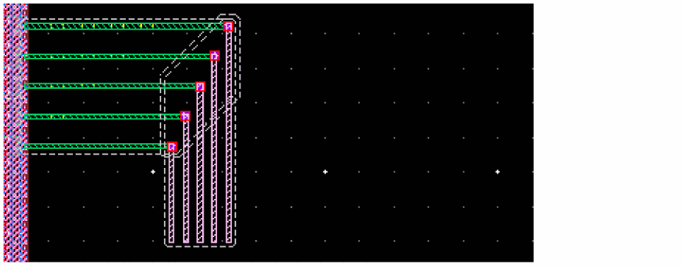
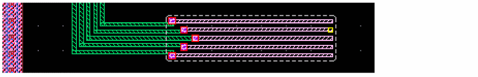

A
Forms Reference
This chapter describes the Interactive and Assisted Routing forms.
- Create Bus Form
- Create Geometric Wire Form
- Create Wire Form
- Create Stranded Wire Form
- Layout Editor Options Form
- Point to Point Form
- Using the Select Via Form
- Stretch Form
- Metal Density Options Form (ICADVM18.1 EXL Only)
Create Bus Form
You can create a bus in all tiers of the Virtuoso Layout Suite.
Create Bus Form in L
Net Name enables you to specify the net names for creating a bus. You can specify the net names in one of the following ways:
-
By specifying a bundle name, such as
netA, netB, netC<1>, netD, where the net names are separated by commas. -
By using the bus notation, such as
net<0:3>. If you specify the net names in bus notation, the notation expands to display individual net names, such asnet<0>, net<1>, net<2>, net<3>, in the Net Name field when you move the cursor to another field in the form. The number in the Number of Bits cyclic field updates based on the number of nets specified in the Net Name field. For example, the Number of Bits cyclic field updates to4for the bus notationnet<0:3>. -
By specifying a bus base name, such as
netAormyBus, and additionally setting up the bus cardinality in the Number of Bits cyclic field. The bus base name expands to display individual net names in the Net Name field only after you start creating the bus. For example, if you start creating a bus by specifying the bus base name asnetAand setting the Number of Bits cyclic field to10, the bus creation begins with10wires that are assigned to thenetA<0>, netA<1>, netA<2>, ... , netA<10>nets.
-
By specifying a bundle name, such as
New nets are created if the ones specified do not already exist. If you start creating a bus from existing pins, the net names are automatically picked from the net of the pins. If you create the bus in free space without specifying any net names, the bus created is not assigned to any net and therefore, does not have any connectivity.
Environment variable: netName
All Nets Width
enables you to specify the width of each wire in the bus. You can increase or decrease the wire width by pressing Ctrl + Shift keys and scrolling the mouse wheel up or down, respectively.
Environment variable:
All Nets Bit Spacing
specifies the distance between the centerlines of the bus wires. If no value is specified in this field, the minSpacing value is considered. However, when Various is displayed in this field, it means that there is no common value for the spacing between each bits of a bus.
Fan Out to Vias spreads bus wires for via placement. When wires are at the minimum wire spacing but the via spacings are larger, the wires can either be fanned out to connect to the vias in the pattern or can be back tracked to intersect the previous segment in the wire.
Environment variable: fanOutToVias
Create Bus Constraint creates a bus constraint automatically, if one does not already exist, for the nets you specify in the Net Name field or for the ones you pick by area-selecting multiple pins or instPins. You can view the created bus constraint in the Constraint Manager in XL and higher tiers.
Environment variable: weCreateBusConstraint
Number of Bits
enables you to specify the number of wires in an unassigned bus. The default value is 2.
- In the Net Name field, if you specify net names as a bundle name or by using the bus notation, the value in the Number of Bits cyclic field automatically updates to match the number of nets specified. If net names are specified in the Net Name field and you manually update the value in the Number of Bits cyclic field, the net names specified in the Net Name field are removed.
-
In the Net Name field, if you specify the net names by using the bus base name, you can set up the cardinality of the bus by using the Number of Bits cyclic field. The bus base name expands to display individual net names in the Net Name field only after you start creating the bus.
- If you change the number of bits from the default value, which is 2, to any other value, and then specify the net name, the number of bits does not get reset to default value 2. The last changed value is retained in the Number of Bits cyclic field.
Environment variable: weBusNumBits
Justification controls the direction in which to offset the wires from the digitized points.
Environment variable:
Offset
creates wires at a specified distance from the digitized point with respect to the centerline of the control wire, in the direction specified by Justification. The default is 0.
Environment variable: wireOffset
Begin Style controls how the beginning wire segment ends are created.
Environment variable: pathSegBeginStyle
auto is the default option. It sets the begin style of the wire as follows:
When the wire is Manhattan in shape, its Begin Style is set as truncate.
Two Manhattan orthogonal wires will have their respective Begin Style and End Style set as extend in order to avoid notches.
When the wire is diagonal in shape, its Begin Style is set as custom.
Two diagonal orthogonal wires will have their respective Begin Style and End Style set as custom in order to avoid notches.
truncate creates wires with no beginning extension.
extend creates wires with the default beginning extension value.
variable uses the value specified in the Begin field for the beginning extensions of wires.
custom creates wires in which the vertices are constrained to the current grid.
Begin allows a value to be specified for the beginning extensions of wires. This field is available if the Begin Style list is set to variable.
Environment variable: pathSegBeginExt
End Style controls how the ending wire segment ends are created.
Environment variable: pathSegEndStyle
auto is the default option. It sets the end style for the wire as follows:
When the wire is Manhattan in shape, its End Style is set as truncate.
Two Manhattan orthogonal wires will have their respective Begin Style and End Style set as extend in order to avoid notches.
When the wire is diagonal in shape, its End Style is set as custom.
Two diagonal orthogonal wires will have their respective Begin Style and End Style set as custom in order to avoid notches.
truncate creates wires with no ending extensions.
extend creates wires with the default ending extension values.
variable allows a value to be specified in the End field for the ending extensions of wires.
custom creates wires in which the vertices are constrained to the current grid.
End allows a value to be specified for the ending extensions of wires. This field is available if variable is selected from the End Style list.
Environment variable: pathSegEndExt
Snap Mode controls how the cursor snaps to the grid when you create a bus.
Environment variable:
diagonal creates wires parallel to the X or Y axis or at a 45-degree angle to the axes.
orthogonal creates wires parallel to the X or Y axis.
L90XFirst creates orthogonal two-segment wires and creates the first line in the X direction.
L90YFirst creates orthogonal two-segment wires and creates the first line in the Y direction.
Snap to Pin Center snaps wires to the center of rectangular pins or of pins that are created as polygons and have rectangular shapes. When this check box is selected, bus wires snap to the starting and ending pins centers. By default, the Snap to Pin Center check box is not selected.
Environment variable: snapToPin
Create Bus Form in Layout XL and Higher Tiers
Net Name enables you to specify the net names for creating a bus. You can specify the net names separated by commas or spaces or specify them in bus notation, such as net<0:3>. New nets are created if the ones specified do not already exist. If you start creating a bus from existing pins, the net names are automatically picked from the net of the pins.
Environment variable: netName
Probe Nets creates probes for the autopicked, selected, or specified nets.
All Nets Width
enables you to specify the width of each wire in the bus. You can increase or decrease the wire width by pressing Ctrl + Shift keys and scrolling the mouse wheel up or down, respectively.
Environment variable: wireWidth
All Nets Bit Spacing
specifies the distance between the centerlines of the bus wires. If no value is specified in this field, the minSpacing value is considered.
Fan Out to Vias spreads bus wires for via placement. When wires are at the minimum wire spacing but the via spacings are larger, the wires can either be fanned out to connect to the vias in the pattern or can be back tracked to intersect the previous segment in the wire.
Environment variable: fanOutToVias
Create Bus Constraint creates a bus constraint automatically, if one does not already exist, for the nets you specify in the Net Name field or for the ones you pick by area-selecting multiple pins or instPins. You can view the created bus constraints in the Constraint Manager in Layout XL and higher tiers.
Environment variable: weCreateBusConstraint
Number of Bits
enables you to specify the number of wires in an unassigned bus. The default value is 2.
- In the Net Name field, if you specify net names as a bundle name or by using the bus notation, the value in the Number of Bits cyclic field automatically updates to match the number of nets specified. If net names are specified in the Net Name field and you manually update the value in the Number of Bits cyclic field, the net names specified in the Net Name field are removed.
-
In the Net Name field, if you specify the net names by using the bus base name, you can set up the cardinality of the bus by using the Number of Bits cyclic field. The bus base name expands to display individual net names in the Net Name field only after you start creating the bus.
- If you change the number of bits from the default value, which is 2, to any other value, and then specify the net name, the number of bits does not get reset to default value 2. The last changed value is retained in the Number of Bits cyclic field.
Environment variable: weBusNumBits
Justification controls the direction in which to offset the wires from the digitized points.
Environment variable:
Offset
creates wires at a specified distance from the digitized point with respect to the centerline of the control wire, in the direction specified by Justification. The default is 0.
Environment variable: wireOffset
Begin Style controls how the beginning wire segment ends are created.
Environment variable: pathSegBeginStyle
auto is the default option. It sets the begin style of the wire as follows:
When the wire is Manhattan in shape, its Begin Style is set as truncate.
Two Manhattan orthogonal wires will have their respective Begin Style and End Style set as extend in order to avoid notches.
When the wire is diagonal in shape, its Begin Style is set as custom.
Two diagonal orthogonal wires will have their respective Begin Style and End Style set as custom in order to avoid notches.
truncate creates wires with no beginning extension.
extend creates wires with the default beginning extension value.
variable uses the value specified in the Begin field for the beginning extensions of wires.
custom creates wires in which the vertices are constrained to the current grid.
Begin allows a value to be specified for the beginning extensions of wires. This field is available if the Begin Style list is set to variable.
Environment variable: pathSegBeginExt
End Style controls how the ending wire segment ends are created.
Environment variable: pathSegEndStyle
auto is the default option. It sets the end style of the wire as follows:
When the wire is Manhattan in shape, its End Style is set as truncate.
Two Manhattan orthogonal wires will have their respective Begin Style and End Style set as extend in order to avoid notches.
When the wire is diagonal in shape, its end Style is set as custom.
Two diagonal orthogonal wires will have their respective Begin Style and End Style set as custom in order to avoid notches.
truncate creates wires with no ending extensions.
extend creates wires with the default ending extension values.
variable allows a value to be specified in the End field for the ending extensions of wires.
custom creates wires in which the vertices are constrained to the current grid.
End allows a value to be specified for the ending extensions of wires. This field is available if variable is selected from the End Style list.
Environment variable: pathSegEndExt
Snap Mode controls how the cursor snaps to the grid when you create a bus.
Environment variable:
diagonal creates wires parallel to the X or Y axis or at a 45-degree angle to the axes.
orthogonal creates wires parallel to the X or Y axis.
L90XFirst creates orthogonal two-segment wires and creates the first line in the X direction.
L90YFirst creates orthogonal two-segment wires and creates the first line in the Y direction.
Auto Terminate finishes the Create Bus command as soon as a point is digitized on a flightline target object (pin, existing wire, or via). All wires in the bus snap to the target pin.
Snap to Pin Center snaps the bus wires to the center of rectangular pins or of pins that are created as polygons and have rectangular shapes. When this check box is selected, bus wires snap to the starting and ending pins centers. By default, the Snap to Pin Center check box is not selected.
Environment variable: snapToPin
Snap to Via Center snaps wires to the center of vias. If this check box is selected and you click a via, the starting wire starts from the clicked point and two small segments are added to connect to the via origin. With this check box selected, tapping a via and a wire gives preference to the via. This check box is off by default.
Environment variable: snapToViaCenter
Cover Pin adjusts the wire segment to automatically cover the source and target pins. Otherwise, the wire segment is not adjusted and the wire terminates at a point you had chosen. By default, this option is deselected.
Environment variable: weCoverPin
Custom Layer Pattern enbales or disables the fetaure to specify a multi-layer pattern.
Custom Layer Pattern combox box lets you specify a multi-layer pattern or select an existing multi-layer pattern.
For more information, see
Related Topics
Create Bus Context-Sensitive Menu
Create Bus Context-Sensitive Menu
The Create Bus context-sensitive menu appears on right-clicking in the design display area when the Create Bus (L/XL/GXL) or the Create Wire (XL/GXL) command is running and multiple wires are being routed.
The context-sensitive menu provides the following commands:
- Multi-Layer Bus Selection
- Use Color Mode
- Cycle Control Wire
- Via Up to <layer_name>
- Via Down to <layer_name>
- Via To Target Layers
- Via
- Use Width Spacing Pattern
- Use Width
- Use Spacing
- Use Width and Spacing Target Pins
- Finish Bus
- Finish Trunks
- Backup Point
Multi-Layer Bus Selection
Provides support to create and digitize the bits of a bus on different metal layers. For more information, see Supporting Multi-Layer Bus.
Use Color Mode
Controls the color mode of the bus. For more information, see Specifying the Bus Color Mode.
Cycle Control Wire
Cycles the control wire function among the extreme and middle wires of a bus. For more information, see Using the Control Wire.
Via Up to <layer_name>
Changes the layer to the next layer up and places the corresponding default via. A layer can now connect to several layers in the layers stack:
- When current layer connects to two or more upper layers in the layer stack, a slider is created with the connected layers.
- When current layer connects to a single upper layer in the layers stack, the layer name appears in the Create Bus Context Sensitive menu.
- When current layer is unable to connect to any upper layer in the layers stack, the Via Up field appears disabled in the Create Bus Context Sensitive menu.
Via Down to <layer_name>
Changes the layer to the next layer down and places the corresponding default via. A layer can now connect to several layers in the layers stack:
- When current layer connects to two or more lower layers in the layer stack, a slider is created with the connected layers.
- When current layer connects to a single lower layer in the layers stack, the layer name appears in the Create Bus Context Sensitive menu.
- When current layer is unable to connect to any lower layer in the layers stack, the Via Up field appears disabled in the Create Bus Context Sensitive menu.
Via To Target Layers
Adds via stacks to the layer of the target objects. The target objects are all the objects that are pointed to by the flightlines when the Create Bus command is run. However, if the flightline option in the Wire Assistant is off, then vias are not added.
If a bus bit is already on the same layer as its respective target object, then a via is not added and a message is displayed in CIW as follows:
"WARNING* (LE-105035): Already on specified layer."
Via
Let’s you select the via options.
How to define custom transitions
You can define customized SKILL procedures to create complex multi-layer bus transition patterns. For more information, see Customizing Multi-Layer Bus Transition.
Select Via
Opens the Select Via form. Use the Select Via form to change the bus layer. You can rotate the via by using the Select Via form or by using the Rotate Via Cut Pattern command on this submenu.
Revert To Multi-Layer Bus
Enables you to switch to a multi-layer bus configuration from the bus bits on the same metal layer. For more information, see Switching Bus Bits to the Same Layer.
Rotate Via Cut Pattern
Rotates the via cuts and swaps the rows and columns, if any, while rotating the via shape by 90 degree as you place or drag the via. You can also rotate pending vias by clicking the middle mouse button. This command is available only while you are adding a via. You can also rotate a via by using the Rotate Via(s) Cut Pattern button on the Using the Select Via Form.
Via Alignment
Provides options to align vias while adding them to the layout. You can choose to align a via automatically or by selecting a custom alignment option. You can also align a via by using the Via Alignment options on the Using the Select Via Form. For more information about the Automatic and Override alignment options, see the Using the Select Via Form.
Via Pattern
Provides predefined via patterns to choose from to add multiple vias simultaneously while you are routing multiple wires. For more information about the available patterns, see the Using the Select Via Form.
Use Width Spacing Pattern
Use Width Spacing Pattern has been introduced in the Create Bus context-sensitive menu to work with various width spacing patterns. For more information on this, refer to Working with Width Spacing Patterns During Wire Editing.
Use Width
- Same for all layers
- Overrides by layer
- Default Constraints
- Source Objects
- Target Objects
- Tap Wires Width
- Tap Vias Width
- Tap Shapes and Pins Width
Same for all layers
Specifies to use the same bus wire width for all layers. The width value is determined by the value specified in the Width field of the Create Wire form.
Overrides by layer
Sets the bus wire width the same as the result of the constraint lookup for minWidth in the technology file when the layer is not used. Else, the width is determined by the last width used for the layer. The width value from the Wire Assistant table can also be used for the bus wires on each layer. You can also use the value specified in the Width field for the bus wires on each layer.
Default Constraints
Sets the bus wire width same as the result of the constraint lookup for minWidth value in the technology file or in any applicable constraint group defined at the design or object level.
Source Objects
Specified to use the width determined by the width of the tapped object. This is the default option. The source object can be pins or wires. Selecting the Source Objects option for the first segment of a bus wire ensures that Tap Wires Width or Tap Pins Width is selected, depending on the source object. You can also select Source Objects even if the first segments of the wires does not have the source object width. In such a case, the Tap Wires Width and Tap Pins Width option does not change.
Target Objects
Sets each bus wire to match the width of the same edge of each respective target pin. If the pins are vertically aligned to bus wires, the bus wire widths match the width of the vertical edges of the respective target pins. Similarly, if the pins are horizontally aligned to bus wires, the bus wire widths match the width of the horizontal edges of the respective target pins. The horizontal and vertical edges might correspond to narrow edges for some target pins and wide edges for other target pins. This option cannot be selected and you need to use the Target Pin Narrow Edge or Target Pin Wide Edge options depending on the edge whose width you want.
Tap Wires Width
When selected, enables tapping the width on the starting object for new wire when the starting object is a wire. The Tap Wires Width option is disabled when the Auto Tap Wire option is deselected in the Layout Editor Options form. To enable the Tap Wires Width option in the Use Width menu, select the Auto Tap Wire option in the Layout Editor Options form.
Environment variable:
Tap Vias Width
When selected, enables tapping the width on the starting object for new wire when the starting object is a via. The edge of the via determines the width of the started wire.
Tap Shapes and Pins Width
When selected, automatically taps a top-level shape, a top-level pin, or a level-1 instance layer and width attributes. The objects type is either a rectangle, a polygon, or a path. All valid routing layers can be tapped. The Tap Shapes and Pins Width option is disabled when the Auto Tap Wire option is deselected in the Layout Editor Options form. To enable the Tap Shapes and Pins Width option in the Use Width menu, select the Auto Tap Wire option in the Layout Editor Options form.
Environment variable:
Use Spacing
- Same for all layers
- Overrides by layer
- Default Constraints
- Source Objects
- Target Objects
- Gather/Spread
- Fan Out To Vias
Same for all layers
Specifies to use the same bus wire spacing on all the layers. The value specified in the Bit Spacing field is used for the bus wires on all layers. The constraint overrides for all layers are available in the Wire Assistant table.
Overrides by layer
Sets the bus wire spacing same as the spacing value from the Wire Assistant table on each layer. By default, the result of the constraint lookup for minSpacing is used.You can also use the value specified in the Bit Spacing field for the bus wires on each layer.
Default Constraints
Sets the bus wire spacing the same as the result of the constraint lookup for minSpacing in the technology file or in any applicable constraint group defined at the design or object level.
Source Objects
This is the default option when starting from pins or wires and not when staring from space. The spacing of the wires is adjusted to keep the centerlines of the wires aligned with the pins center.
Target Objects
Sets the same spacing between the centerlines of bus wires as the spacing between the centers of the target pins. You can also set the spacing between the pins which belong to the same instance or different instances.
Gather/Spread
Gathers or spreads bus wires before the next digitized point. It toggles to the Cancel Gather/Spread command.
When spreading or gathering a bus, you can control the spacing of a bus. The following figure shows the spacing in a bus while gathering or spreading a bus.
Environment variable:
The environment variable affects the spacing measured on the middle segments of gather and spread. The following figure displays the spacing on the middle segment when the environment variable is set to largest.
The following figure displays the spacing on the middle segment when the environment variable is set to smallest.
Fan Out To Vias
Spreads bus wires for via placement. When wires are at the minimum wire spacing but the via spacings are larger, the wires can either be fanned out to connect to the vias in the pattern or can be back tracked to intersect the previous segment in the wire. When the Fan Out to Vias check box is selected, jogs are created near the vias to respect the minimum spacing between the vias and wires. Else, the via spacing that respect the minimum spacing is propagated until the previous bend or vias. The fanout checkbox has an effect only if the spacing that would be used to place the vias in the previous segment alignment is smaller than minSpacing.
Environment variable:
Use Width and Spacing Target Pins
Sets both Use Width: Target Pins and Use Spacing: Target Pins.
Finish Bus
Automatically routes the active flightline following the layer, via and width specifications defined in the application default constraint group or any overrides defined in the Create Bus Form or in the
Finish Trunks
The Finish Trunks option automatically converts the pathSegs that are being created using the Create Wire or Create Bus command into trunks. Also, it then runs Pin To Trunk routing in the same step. The default bindkey is 2. The following figure shows a layout design on which the Finish Trunk command has successfully completed.

Backup Point
Removes the last digitized point. If a via was added to the last digitized point, that via is also removed.
Edit Bus Context-Sensitive Menu
Selecting and right-clicking the bus in the design canvas when the Edit – Wiring – Bus command is active displays the Edit Bus context-sensitive menu.
The context-sensitive menu provides the following options:
Cycle Control Wire
Changes the control wire of the selected part of a bus. For example, if there are 5 wires selected in a bus, the control wire moves from top to bottom and then to centre. This means using the Cycle Control Wire option in the Edit Bus context-sensitive menu, you can select only the top, bottom, and the centre wire as the control wire. The second and fourth wire will never be selected as the control wire. To set the second or fourth wire as a control wire, click the corresponding net name in the Wire Assistant Bus Bit table. For more information, refer to Using the Control Wire.
(De)Select Under Cursor
Selects or deselects the wire(s) on which the mouse cursor exists as shown in the following figure.
Routing Object Granularity
It helps select routing objects by automatically expanding the selection based on the modes. For more information on modes, refer to
Create Geometric Wire Form
By using this form, you can create paths and geometric pathSegs and vias. For creating pathSegs in routes, see the Create Wire Form.
Create Geometric Wire Form in L
Environment variable:
SKILL function: leHiCreateGeometricWire
-
Paths
are single layer objects. When used to create non-orthogonal routing, paths can lead to off-grid vertices being created, depending on the width and angle being used.
- Segments (pathSegs) are single layer objects that can be used to create on grid 45 degree wires. Segments can not be used for any-angle routing and are limited to orthogonal and diagonal routing. This option is selected by default.
The form when Paths is selected:
The form when Segments is selected:
Net Name lets you enter a net name for the current wire. The created wire is added to the specified net. A new net is created if the one specified does not already exist. To specify net names for creating a bus, enter a list of net names separated by commas or spaces. You can also specify net names in bus notation, such as net<0:3>.
Environment variable: netName
Snap Mode controls how the cursor snaps when you create the wire. When Segments (pathSegs) are used to create wires, anyAngle is not an option. PathSegs are limited to orthogonal and diagonal routing.
Environment variable:
anyAngle creates wires at any angle. Can only be specified when using paths to create wires.
diagonal creates wires parallel to the X or Y axis or at a 45-degree angle to the axes.
orthogonal creates wires parallel to the X or Y axis.
L90XFirst creates orthogonal two-segment wires and creates the first line in the X direction.
L90YFirst creates orthogonal two-segment wires and creates the first line in the Y direction.
L45LongFirst and L45AngleFirst creates two paths with one click, but with a 45 degrees angle between them.
Snap to Pin Center snaps wires to the center of rectangular pins or of pins that are created as polygons and have rectangular shapes. The option snaps wires to the starting and ending pins. The Create – Shape – Geometric Wire and Create – Wiring – Wire commands snap wires to the centerline of paths and pathSegs and the origin of vias when tapping those particular objects regardless of whether Snap to Pin Center is on or off. The Snap to Pin Center option is off by default.
Environment variable: snapToPin
-
Using Paths
Width displays the width of the current wire. You can also enter a value for the width of the current wire. You can increase or decrease the wire width interactively by pressingCtrl+Shiftkeys and scrolling the mouse wheel up or down, respectively.
Environment variable: wireWidth
Justification controls the direction in which to offset the path from the digitized points of the path.
Environment variable: pathJustify
Offset creates a wire at a specified distance from the digitized points with respect to the centerline of the path, in the direction specified by Justification. The default is0.
Environment variable: wireOffset
Path Style controls how the path ends are created.
Environment variable: pathStyle
truncate creates a wire with no ending extension.
extend creates a wire with the default ending extension value.
round creates a wire with path ends extending from the path points by one half the path width, creating an octagonal shape.
variable uses the value specified in the End field for the ending extension of a wire.
Begin allows a value to be specified for the beginning extension of the wire. This field becomes active when variable is selected from the Path Style field.
Environment variable: pathBeginExt
End allows a value to be specified for the ending extension of the wire. This field becomes active when variable is selected from the Path Style field.
Environment variable: pathEndExt
Create as ROD, named creates the path as a ROD object with the specified name.
Environment variable: rodAutoName
-
Using Segments
Width displays the width of the current wire. You can also enter a value for the width of the current wire.
Environment variable: wireWidth
Justification controls the direction in which to offset the pathSeg from the digitized points of the pathSeg.
Environment variable: pathJustify
Offset creates a wire at a specified distance from the digitized points with respect to the centerline of the pathSeg, in the direction specified by Justification. The default is0.
Environment variable: wireOffset
Begin Style controls how the beginning wire segment ends are created.
Environment variable: pathSegBeginStyle
auto is the default option. It sets the begin style of the wire as follows:
When the wire is Manhattan in shape, its Begin Style is set astruncate.
Two Manhattan orthogonal wires will have their respective Begin Style and End Style set asextendin order to avoid notches.
When the wire is diagonal in shape, its Begin Style is set ascustom.
Two diagonal orthogonal wires will have their respective Begin Style and End Style set ascustomin order to avoid notches.
truncate creates a wire with no beginning extension.
extend creates a wire with the default beginning extension value.
variable uses the value specified in the Begin field for the beginning extension of a wire.
custom creates a wire in which the vertices are constrained to the current grid.
Begin allows a value to be specified for the beginning extension of the wire. This field becomes active when variable is selected from the Begin Style field.
Environment variable: pathSegBeginExt
End Style controls how the ending wire segment ends are created.
Environment variable: pathSegEndStyle
auto is the default option. It sets the end style of the wire as follows:
When the wire is Manhattan in shape, its End Style is set astruncate.
Two Manhattan orthogonal wires will have their respective Begin Style and End Style set asextendin order to avoid notches.
When the wire is diagonal in shape, its End Style is set ascustom.
Two diagonal orthogonal wires will have their respective Begin Style and End Style set ascustomin order to avoid notches.
truncate creates a wire with no ending extension.
extend creates a wire with the default ending extension value.
variable allows a value to be specified in the End field for the ending extension of a wire.
custom creates a wire in which the vertices are constrained to the current grid.
End allows a value to be specified for the ending extension of the wire. This field becomes active when variable is selected from the End Style field.
Environment variable: pathSegEndExt
When the wire is diagonal in shape, its End Style is set as custom.
Two diagonal orthogonal wires will have their respective Begin Style and End Style set as custom in order to avoid notches.
truncate creates a wire with no ending extension.
extend creates a wire with the default ending extension value.
variable allows a value to be specified in the End field for the ending extension of a wire.
custom creates a wire in which the vertices are constrained to the current grid.
End allows a value to be specified for the ending extension of the wire. This field becomes active when variable is selected from the End Style field.
Environment variable: pathSegEndExt
Create Geometric Wire Form in XL and GXL
Environment variable: createWireMode
- Paths are single layer objects. When used to create non-orthogonal routing, paths can lead to off-grid vertices being created, depending on the width and angle being used.
- Segments (pathSegs) are single layer objects that can be used to create on grid 45 degree wires. Segments can not be used for any-angle routing and are limited to orthogonal and diagonal routing. This option is selected by default.
In XL and GXL, the Create Wire command, by default, uses pathSegs in routes.
The form when Paths is selected:
The form when Segments is selected:
Net Name lets you enter a net name for the current wire. The created wire is added to the specified net. A new net is created if the one specified does not already exist. To specify net names for creating a bus, enter a list of net names separated by commas or spaces. You can also specify net names in bus notation, such as net<0:3>.
Environment variable: netName
Probe Nets creates probes for the selected or specified net.
Snap Mode controls how the cursor snaps when you create the wire. When Segments (pathSegs) are used to create wires, anyAngle is not an option. PathSegs are limited to orthogonal and diagonal routing.
Environment variable:
anyAngle creates wires at any angle. Can only be specified when using paths to create wires.
diagonal creates wires parallel to the X or Y axis or at a 45-degree angle to the axes.
orthogonal creates wires parallel to the X or Y axis.
L90XFirst creates orthogonal two-segment wires and creates the first line in the X direction.
L90YFirst creates orthogonal two-segment wires and creates the first line in the Y direction.
Auto Terminate terminates the Create Wire command as soon as a point is digitized on a flightline target object (pin or existing wire or via). When creating a bus and Auto Terminate is on, all wires in the bus snap to its target pin.
Snap to Pin Center snaps wires to the center of rectangular pins or of pins that are created as polygons and have rectangular shapes. The option snaps wires to the starting and ending pins. The Create - Shape - Geometric Wire and Create - Wire commands snap wires to the centerline of paths and pathSegs and the origin of vias when tapping those particular objects regardless of whether Snap to Pin Center is on or off. The Snap to Pin Center option is off by default.
Environment variable: snapToPin
Snap to Via Center snaps wires to the center of vias. If this check box is selected and you click a via, the starting wire starts from the clicked point and two small segments are added to connect to the via origin. With this check box selected, tapping a via and a wire gives preference to the via. This check box is off by default.
Environment variable: snapToViaCenter
-
Using Paths
Width displays the width of the current wire. You can also enter a value for the width of the current wire. You can increase or decrease the wire width interactively by pressingCtrl+Shiftkeys and scrolling the mouse wheel up or down, respectively.
Environment variable: wireWidth
Justification controls the direction in which to offset the path from the digitized points of the path or pathSeg.
Environment variable: pathJustify
Offset creates a wire at a specified distance from the digitized points with respect to the centerline of the path, in the direction specified by Justification. The default is0.
Environment variable: wireOffset
Path Style controls how the path ends are created.
Environment variable: pathStyle
truncate creates a wire with no ending extension.
extend creates a wire with the default ending extension value.
round creates a wire with path ends extending from the path points by one half the path width, creating an octagonal shape.
variable uses the value specified in the End field for the ending extension of a wire.
Begin allows a value to be specified for the beginning extension of the wire. This field becomes active when variable is selected from the Path Style field.
Environment variable: pathBeginExt
End allows a value to be specified for the ending extension of the wire. This field becomes active when variable is selected from the Path Style field.
Environment variable: pathEndExt
Create as ROD, named creates the path as a ROD object with the specified name.
Environment variable: rodAutoName
-
Using Segments
Width displays the width of the current wire. You can also enter a value for the width of the current wire. You can increase or decrease the wire width interactively by pressingCtrl+Shiftkeys and scrolling the mouse wheel up or down, respectively.
Environment variable: wireWidth
Justification controls the direction in which to offset the pathSeg from the digitized points of the path or pathSeg.
Environment variable: pathJustify
Offset creates a wire at a specified distance from the digitized points with respect to the centerline of the pathSeg, in the direction specified by Justification. The default is0.
Environment variable: wireOffset
Begin Style controls how the beginning wire segment ends are created.
Environment variable: pathSegBeginStyle
auto is the default option. It sets the begin style of the wire as follows:
When the wire is Manhattan in shape, its Begin Style is set astruncate.
Two Manhattan orthogonal wires will have their respective Begin Style and End Style set asextendin order to avoid notches.
When the wire is diagonal in shape, its Begin Style is set ascustom.
Two diagonal orthogonal wires will have their respective Begin Style and End Style set ascustomin order to avoid notches.
truncate creates a wire with no beginning extension.
extend creates a wire with the default beginning extension value.
variable uses the value specified in the Begin field for the beginning extension of a wire.
custom creates a wire in which the vertices are constrained to the current grid.
Begin allows a value to be specified for the beginning extension of the wire. This field becomes active when variable is selected from the Begin Style field.
Environment variable: pathSegBeginExt
End Style controls how the ending wire segment ends are created.
Environment variable: pathSegEndStyle
auto is the default option. It sets the end style of the wire as follows:
When the wire is Manhattan in shape, its End Style is set astruncate.
Two Manhattan orthogonal wires will have their respective Begin Style and End Style set asextendin order to avoid notches.
When the wire is diagonal in shape, its End Style is set ascustom.
Two diagonal orthogonal wires will have their respective Begin Style and End Style set ascustomin order to avoid notches.
truncate creates a wire with no ending extension.
extend creates a wire with the default ending extension value.
variable allows a value to be specified in the End field for the ending extension of a wire.
custom creates a wire in which the vertices are constrained to the current grid.
End allows a value to be specified for the ending extension of the wire. This field becomes active when variable is selected from the End Style field.
Environment variable: pathSegEndExt
When the wire is diagonal in shape, its End Style is set as custom.
Two diagonal orthogonal wires will have their respective Begin Style and End Style set as custom in order to avoid notches.
truncate creates a wire with no ending extension.
extend creates a wire with the default ending extension value.
variable allows a value to be specified in the End field for the ending extension of a wire.
custom creates a wire in which the vertices are constrained to the current grid.
End allows a value to be specified for the ending extension of the wire. This field becomes active when variable is selected from the End Style field.
Environment variable: pathSegEndExt
Create Geometric Wire Form in ICADVM18.1 Virtuoso RF Solution
Net Name lets you enter a net name for the curved path. The created curved path is added to the specified net. A new net is created if the one specified does not already exist.
Environment variable: netName
Probe Nets creates probes for the selected or specified net.
Width
displays the width of the curved path. You can also enter a value for the width of the curved path. You can increase or decrease the width interactively by pressing Ctrl + Shift keys and scrolling the mouse wheel up or down, respectively.
Environment variable: wireWidth
Justification controls the direction in which to offset the curved path from the digitized points of the path.
Environment variable:
Offset
creates a curved path at a specified distance from the digitized points with respect to the centerline of the curved path, in the direction specified by Justification. The default is 0.
Create as ROD, named creates the curved path as a ROD object with the specified name.
Environment variable: rodAutoName
Snap Mode controls how the cursor snaps when you create the curved path.
Environment variable:
anyAngle creates wires at any angle. Can only be specified when using paths to create wires.
diagonal creates wires parallel to the X or Y axis or at a 45-degree angle to the axes.
orthogonal creates wires parallel to the X or Y axis.
L90XFirst creates orthogonal two-segment wires and creates the first line in the X direction.
L90YFirst creates orthogonal two-segment wires and creates the first line in the Y direction.
L45LongFirst creates two pathsegs forming an angle of 135 degrees, where the first one being either horizontal or vertical.
L45AngleFrst creates two pathsegs forming an angle of 135 degrees, the first one being diagonal.
Auto Terminate terminates the Create Wire command as soon as a point is digitized on a flightline target object (pin or existing wire or via).
Snap to Pin Center snaps curved paths to the centerline of objects, such as TLIP, BGA pin, vias, and bondfigers, when tapping a particular object. The Snap to Pin Center option is on by default.
Environment variable: snapToPin
Snap to Via Center snaps curved paths to the center of padstack vias. If this check box is selected and you click a via, the starting wire starts from the clicked point and two small segments are added to connect to the via origin. This check box is on by default.
Environment variable: snapToViaCenter
Cover Pin adjusts the curved path to automatically cover the source and target pins. Otherwise, the wire segment is not adjusted and the wire terminates at a point you had chosen. By default, this option is deselected.
Environment variable: weCoverPin
Related topics
Create Single Wire Context-Sensitive Menu
Create Bus Context-Sensitive Menu
Create Wire Form
In IC6.1.6, the Create Wire command is used only for single wire creation. For multiple wires or bus creation, the Create Bus command is used.
Using the Create Wire form, you can create pathSegs and vias in routes. See Creating a Wire for more information. To create paths and geometric pathSegs, see the Create Geometric Wire Form. The Create Wire form has the same fields and options as those for Segments in the Create Geometric Wire Form, with the difference that the Create Wire form generates symbolic wires.
You can create a wire in the L, XL, and GXL tiers of the Virtuoso Layout Suite.
Create Wire Form in L
Net Name lets you enter a net name for the current wire. The created wire is added to the specified net. A new net is created if the one specified does not already exist. To specify net names for creating a wire, enter a list of net names separated by commas or spaces.
Environment variable: netName
Width
displays the width of the current wire. You can override this value. You can increase or decrease the wire width interactively by pressing Ctrl + Shift keys and scrolling the mouse wheel up or down, respectively.
Environment variable: wireWidth
Justification controls the direction in which to offset the pathSeg from the digitized points of the path or pathSeg.
Environment variable:
Offset
creates a wire at a specified distance from the digitized points with respect to the centerline of the pathSeg, in the direction specified by Justification. The default is 0.
Environment variable: wireOffset
Begin Style controls how the beginning wire segment ends are created.
Environment variable: pathSegBeginStyle
auto is the default option. It sets the begin style of the wire as follows:
When the wire is Manhattan in shape, its Begin Style is set as truncate.
Two Manhattan orthogonal wires will have their respective Begin Style and End Style set as extend in order to avoid notches.
When the wire is diagonal in shape, its Begin Style is set as custom.
Two diagonal orthogonal wires will have their respective Begin Style and End Style set as custom in order to avoid notches.
truncate creates a wire with no beginning extension.
extend creates a wire with the default beginning extension value.
variable uses the value specified in the Begin field for the beginning extension of a wire.
custom creates a wire in which the vertices are constrained to the current grid.
End Style controls how the ending wire segment ends are created.
Environment variable:
auto is the default option. It sets the end style of the wire as follows:
When the wire is Manhattan in shape, its End Style is set as truncate.
Two Manhattan orthogonal wires will have their respective Begin Style and End Style set as extend in order to avoid notches.
When the wire is diagonal in shape, its End Style is set as custom.
Two diagonal orthogonal wires will have their respective Begin Style and End Style set as custom in order to avoid notches.
truncate creates a wire with no ending extension.
extend creates a wire with the default ending extension value.
variable allows a value to be specified in the End field for the ending extension of a wire.
custom creates a wire in which the vertices are constrained to the current grid.
Begin allows a value to be specified for the beginning extension of the wire. This field becomes active when variable is selected from the Begin Style field.
Environment variable:
End allows a value to be specified for the ending extension of the wire. This field becomes active when variable is selected from the End Style field.
Snap Mode controls how the cursor snaps when you create the wire.
Environment variable:
diagonal creates wires parallel to the X or Y axis or at a 45-degree angle to the axes.
orthogonal creates wires parallel to the X or Y axis. This is the default.
L90XFirst creates orthogonal two-segment wires and creates the first line in the X direction.
L90YFirst creates orthogonal two-segment wires and creates the first line in the Y direction.
Snap to Pin Center snaps wires to the center of rectangular pins or of pins that are created as polygons and have rectangular shapes. If this check box is selected, wires snap to the starting and ending pins. The Create – Shape – Geometric Wire and Create – Wiring – Wire commands snap wires to the centerline of paths and pathSegs and the origin of vias when tapping those objects regardless of whether Snap to Pin Center is on or off. The Snap to Pin Center check box is off by default.
Environment variable: snapToPin
Create Wire Form in XL and GXL
Net Name lets you enter a net name for the current wire. The created wire is added to the specified net. A new net is created if the one specified does not already exist. To specify net names for creating a bus, enter a list of net names separated by commas or spaces.
Environment variable: netName
Probe Nets creates probes for the selected or specified net.
Width
displays the width of the current wire. You can override this value. You can increase or decrease the wire width interactively by pressing Ctrl + Shift keys and scrolling the mouse wheel up or down, respectively.
Environment variable: wireWidth
Justification controls the direction in which to offset the pathSeg from the digitized points of the path or pathSeg.
Environment variable:
Offset
creates a wire at a specified distance from the digitized points with respect to the centerline of the pathSeg, in the direction specified by Justification. The default is 0.
Environment variable: wireOffset
Begin Style controls how the beginning wire segment ends are created.
Environment variable: pathSegBeginStyle
auto is the default option. It sets the begin style of the wire as follows:
When the wire is Manhattan in shape, its Begin Style is set as truncate.
Two Manhattan orthogonal wires will have their respective Begin Style and End Style set as extend in order to avoid notches.
When the wire is diagonal in shape, its Begin Style is set as custom.
Two diagonal orthogonal wires will have their respective Begin Style and End Style set as custom in order to avoid notches.
truncate creates a wire with no beginning extension.
extend creates a wire with the default beginning extension value.
variable uses the value specified in the Begin field for the beginning extension of a wire.
custom creates a wire in which the vertices are constrained to the current grid.
Begin allows a value to be specified for the beginning extension of the wire. This field becomes active when variable is selected from the Begin Style field.
Environment variable: pathSegBeginExt
End Style controls how the ending wire segment ends are created.
Environment variable: pathSegEndStyle
auto is the default option. It sets the end style of the wire as follows:
When the wire is Manhattan in shape, its End Style is set as truncate.
Two Manhattan orthogonal wires will have their respective Begin Style and End Style set as extend in order to avoid notches.
When the wire is diagonal in shape, its End Style is set as custom.
Two diagonal orthogonal wires will have their respective Begin Style and End Style set as custom in order to avoid notches.
truncate creates a wire with no ending extension.
extend creates a wire with the default ending extension value.
variable allows a value to be specified in the End field for the ending extension of a wire.
custom creates a wire in which the vertices are constrained to the current grid.
End allows a value to be specified for the ending extension of the wire. This field becomes active when variable is selected from the End Style field.
Environment variable: pathSegEndExt
Snap Mode controls how the cursor snaps when you create the wire.
Environment variable:
diagonal creates wires parallel to the X or Y axis or at a 45-degree angle to the axes.
orthogonal creates wires parallel to the X or Y axis. This is the default.
L90XFirst creates orthogonal two-segment wires and creates the first line in the X direction.
L90YFirst creates orthogonal two-segment wires and creates the first line in the Y direction.
Auto Terminate finishes the Create Wire command as soon as a point is digitized on a flightline target object (pin or existing wire or via). When creating a bus and Auto Terminate is on, all wires in the bus snap to its target pin. This option is selected by default.
Snap to Pin Center snaps wires to the center of rectangular pins or of pins that are created as polygons and have rectangular shapes. If this check box is selected, wires snap to the starting and ending pins. The Create – Shape – Geometric Wire and Create – Wiring – Wire commands snap wires to the centerline of paths and pathSegs and the origin of vias when tapping those objects regardless of whether Snap to Pin Center is on or off. The Snap to Pin Center check box is off by default.
Environment variable: snapToPin
Snap to Via Center snaps wires to the center of vias. If this check box is selected and you click a via, the starting wire starts from the clicked point and two small segments are added to connect to the via origin. With this check box selected, tapping a via and a wire gives preference to the via. This check box is off by default.
Environment variable: snapToViaCenter
Cover Pin adjusts the wire segment to automatically cover the source and target pins. Otherwise, the wire segment is not adjusted and the wire terminates at a point you had chosen. By default, this option is deselected.
Environment variable: weCoverPin
Related topics
Create Single Wire Context-Sensitive Menu
Create Bus Context-Sensitive Menu
Reshape Wire Context-Sensitive Menu
Create Single Wire Context-Sensitive Menu
Right-clicking in the design canvas when the Create Geometric Wire or Create Wire (L/XL/GXL) command is active displays the Create Single Wire context-sensitive menu.
The context-sensitive menu offers the following options:
- Via Up to <layer_name>
- Via Down to <layer_name>
- Via To Target Layers
- Via
- Use Width Spacing Pattern (ICADVM18.1 Only)
- Use Width
- Finish Wire
- Finish Trunk
- Push and Shove (ICADVM 18.1 EXL Only)
- Auto Tap Wire
- Smart Snapping (Only in XL/GXL)
- Constraint-Aware Editing
- Backup Point
Via Up to <layer_name>
Changes the layer to the next layer up and places the corresponding default via. A layer can now connect to several layers in the layers stack:
- When current layer connects to two or more upper layers in the layer stack, a slider is created with the connected layers.
- When current layer connects to a single upper layer in the layers stack, the layer name appears in the Create Wire Context Sensitive menu.
- When current layer is unable to connect to any upper layer in the layers stack, the Via Up field appears disabled in the Create Wire Context Sensitive menu.
Via Down to <layer_name>
Changes the layer to the next layer down and places the corresponding default via. A layer can now connect to several layers in the layers stack:
- When current layer connects to two or more lower layers in the layer stack, a slider is created with the connected layers.
- When current layer connects to a single lower layer in the layers stack, the layer name appears in the Create Wire Context Sensitive menu.
- When current layer is unable to connect to any lower layer in the layers stack, the Via Up field appears disabled in the Create Wire Context Sensitive menu.
Via To Target Layers
Adds via stack to the layer of the target object. The target object is the object that is pointed to by the flightline when the Create Wire command is run. However, if the flightline option in the Wire Assistant is off, then vias are not added.
If a wire is already on the same layer as its respective target object, then a via is not added and a message is displayed in CIW as follows:
"WARNING* (LE-105035): Already on specified layer."
Via
Let’s you select the via options.
Select Via
Opens the Using the Select Via Form to change to other layers. Using this form, you can also rotate the via and also control via alignment.
Rotate Via(s) Cut Pattern
Rotates the via cuts and swaps the rows and columns, if any, while rotating the via shape by 90 degree as you place or drag the via. You can also rotate pending vias by clicking the middle mouse button. This menu command is available while you are adding a via. You can also rotate a via by using the Rotate Via(s) Cut Pattern button on the Using the Select Via Form.
Via Alignment
Provides options to align vias while adding them to the layout. You can choose to align a via either automatically or by selecting a custom alignment option. You can also align a via by using the Via Alignment options on the Using the Select Via Form. For more information about the Automatic and Override alignment options, see the Using the Select Via Form. The Override options on the Via Alignment sub-menu are available while you are adding a via.
Use Width Spacing Pattern (ICADVM18.1 Only)
Use Width Spacing Pattern has been introduced in the Create Single Wire context-sensitive menu to work with various width spacing patterns.
For more information on these options, see Working with Width Spacing Patterns During Wire Editing.
Use Width
For all the Use Width options, except for Target Pin Narrow Edge and Target Pin Wide Edge, a pin edge highlights when it is within a specific distance from the pointer. If you click, the wire snaps to the highlighted pin edge. This is the smart snapping feature of wire. You can configure the snap distance (Aperture) in the Layout Editor Options form. The highlight represents the starting point of wire creation and the length of the highlight determines wire width. The center of the highlight is represented by a yellow box. You can cycle the highlight through the available edges within the Aperture distance by using the Cycle Edge command on the Smart Snapping (Only in XL/GXL) sub-menu.
- Same for all layers
- Overrides by layer
- Default Constraints
- Source Objects
- Target Objects
- Target Object Narrow
- Target Object Wide
- Tap Wires Width
- Tap Vias Width
- Tap Shapes and Pins Width
Same for all layers
Specifies to use the same wire width for all layers. The width value is determined by the value specified in the Width field of the Create Wire form. The constraint overrides for all layers are available in the Wire Assistant table.
Overrides by layer
Sets the wire width the same as the result of the constraint lookup for minWidth in the technology file when the layer is not used. Else, the width is determined by the last width used for the layer. The width value from the Wire Assistant table can also be used for the wires on each layer. You can also use the value specified in the Width field for the wires on each layer.
Default Constraints
Sets the wire width same as the result of the constraint lookup for minWidth in the technology file or in any applicable constraint group defined at the design or object level.
Source Objects
This is the default option. The source object can be pins or wires. It is specified to use the maximum width determined by the width of the tapped object. Selecting the Source Objects option for the first segment of a wire ensures that Tap Wires Width or Tap Pins Width is selected, depending on the source object. You can also select Source Objects even if the first segments of the wires does not have the source object width. In such a case, the Tap Wires Width and Tap Pins Width option does not change.
Target Objects
Sets each bus wire to match the width of the same edge of each respective target pin. If the pins are vertically aligned to bus wires, the bus wire widths match the width of the vertical edges of the respective target pins. Similarly, if the pins are horizontally aligned to bus wires, the bus wire widths match the width of the horizontal edges of the respective target pins. The horizontal and vertical edges might correspond to narrow edges for some target pins and wide edges for other target pins.
Target Object Narrow
This option matches the last segment wire width to the length of the shortest edge of the target pin. The width of the remaining wire is unaffected.
Target Object Wide
This option matches the last segment wire width to the length of the longest edge of the target pin. The width of the remaining wire is unaffected.
Tap Wires Width
Automatically tap an object's layers and attributes when digitizing the first coordinate of a wire. Layers that can be tapped are determined from the technology file. The Tap Wires Width option is disabled when the Auto Tap Wire option is deselected in the Layout Editor Options form. To enable the Tap Wires Width option in the Use Width menu, select the Auto Tap Wire option in the Layout Editor Options form.
Environment variable: weTapWidthOnWires
Tap Vias Width
When selected, enables tapping the width on the starting object for new wire when the starting object is a via. The edge of the via determines the width of the started wire.
Tap Shapes and Pins Width
When selected, automatically taps a top-level shape, a top-level pin, or a level-1 instance layer and width attributes. The objects type is either a rectangle, a polygon, or a path. All valid routing layers can be tapped. The Tap Shapes and Pins Width option is disabled when the Auto Tap Wire option is deselected in the Layout Editor Options form. To enable the Tap Shapes and Pins Width option in the Use Width menu, select the Auto Tap Wire option in the Layout Editor Options form.
Environment variable: weTapWidthOnPins
Finish Wire
Automatically routes the active flightline following the layer, via and width specifications defined in the application default constraint group or any overrides defined in either the F3 Options form or the
Finish Trunk
The Finish Trunk option automatically converts the pathSeg that is being created using the Create Wire or Create Bus command into a trunk. The default bindkey is 2. For more information, see Finishing a Trunk.
The Finish Trunk and Finish Wire options in the Create Wire context-sensitive menu are disabled when the wire segment created using the Create Wire command has no nets associated with it or when there are no more unconnected pins on the net for which a wire segment is created. The following figure shows the disabled Finish Wire and Finish Trunk options.
Push and Shove (ICADVM 18.1 EXL Only)
The Push and Shove menu option is available only in the Virtuoso RF flow. The license required for Virtuoso RF to run on ICADVM18.1 is Virtuoso_RF_Option (95560).
The following figure shows the Push and Shove options for the Create Wire command.
Off
The push-and-shove feature is disabled. This is the default mode.
Hug Only
The wire that is edited moves and avoids the other existing wires. The existing shapes are considered as static and are not pushed.
Prefer Shove
The existing wires are pushed to create space for the edited wire. The wire that is edited moves and avoids the shapes that cannot be pushed, such as pins, bumps, and bond fingers.
Environment variable: pushAndShoveMode (ICADVM20.1 EXL Only)
Smooth Wires
The extra curves and bends of the wire edited by push-and-shove are smoothened. This option is available in case of Virtuoso RF designs.
Environment variable: pushAndShoveAllowJog (ICADVM20.1 EXL Only)
Push Vias
Lets you push existing vias on a wire. The Push Vias option is enabled only when the mode is Prefer Shove.
Environment variable: pushAndShovePushVias (ICADVM20.1 EXL Only)
Show Remaining Violations
The violations that exist on a wire as a result of push and shove are shown.
Environment variable: pushAndShoveCheckerStopLevel (ICADVM20.1 EXL Only)
Related Topics
Pushing and Shoving in Interactive Routing
Auto Tap Wire
This option is on by default. See the Auto Tap option in the Layout Editor Options form in the Virtuoso Layout Suite L User Guide.
Smart Snapping (Only in XL/GXL)
This command is available on the Create Single Wire context-sensitive menu in XL and GXL. You can toggle between Cycle Edge and Use Current Position modes by using the corresponding bindkeys, Ctrl + Spacebar and Ctrl + Shift + Spacebar, respectively.
Enabled
If selected, it enables the smart snapping mode. If off, the Cycle Edge and Use Current Position options are not available. If smart snapping is off, you can start creating the wire by clicking anywhere on a pin; the wire starts from the clicked position.
Environment Variable: weNoSmartSnap
Cycle Edge
This command enables you to highlight and cycle through the edges available within the Aperture distance from the cursor. You can, therefore, quickly and precisely choose the appropriate edge of a level 1 or top-level pin both while starting wire creation and while completing the wire creation. This command also helps to select the edge of the required pin from a group of overlapping pins. You can configure Aperture in the Layout Editor Options form.
The length of the highlight on the starting pin edge depends on the Use Width option selection, which also determines the wire width. You can cycle the highlight through the prospective starting and ending pin edges in the Cycle Edge mode by pressing Ctrl + Spacebar keys. You can switch to Use Current Position mode by using either the context-sensitive menu or by pressing the Ctrl + Shift + Spacebar bindkeys.
Use Current Position
This command resets the point of starting wire creation and completing wire creation to the cursor’s current location. In this mode, you can start or end a wire in empty space as well as from or at a pin. Therefore, select this command when you do not want to start or end a wire by snapping to a pin edge. This is the default smart snapping mode when Smart Snapping is Enabled.
Constraint-Aware Editing
Enforces constraints for nets grouped in a bus constraint and for setting shielding wires. This option is on by default and is available only in XL and GXL.
Backup Point
Removes the last digitized point. If a via had been added to the last digitized point, the via is also removed.
Reshape Wire Context-Sensitive Menu
Selecting and right-clicking the wire in the design canvas when the Reshape command is active displays the Reshape Wire context-sensitive menu.
The context-sensitive menu offers the following options:
- Via Up To <layer_name>
- Via Down To <layer_name>
- Via Up To <layer_name>
- Rotate Via Cut Pattern
- Via Alignment
- Backup Point
- (De)Select Under Cursor
- Routing Object Granularity
Via Up To <layer_name>
Changes the layer to the next layer up and places the corresponding default via.
Via Down To <layer_name>
Changes the layer to the next layer down and places the corresponding default via.
Select Via
Opens the Using the Select Via Form to change to other layers. Using the Select Via form, you can rotate the via and also control via alignment. You can also rotate the via by using the Via command on this context-sensitive menu.
Rotate Via Cut Pattern
Rotates the via cuts and swaps the rows and columns, if any, while rotating the via shape by 90 degree as you place or drag the via. You can also rotate pending vias by clicking the middle mouse button. This menu command is available while you are adding a via. You can also rotate a via by using the Rotate Via(s) Cut Pattern button on the Using the Select Via Form.
Via Alignment
Provides options to align vias while adding them to the layout. You can choose to align a via either automatically or by selecting a custom alignment option. You can also align a via by using the Via Alignment options on the Using the Select Via Form. For more information about the Automatic and Override alignment options, see the Using the Select Via Form. The Override options on the Via Alignment sub-menu are available while you are adding a via.
Backup Point
Removes the last digitized point. If a via had been added to the last digitized point, the via is also removed.
(De)Select Under Cursor
Selects or deselects the wire(s) on which the mouse cursor exists.
Routing Object Granularity
This option is available only in Layout XL and higher tiers. It helps select routing objects by automatically expanding the selection based on the modes. For more information on modes, refer to
Split Wire Context Sensitive Menu
Selecting and right-clicking the wire in the design canvas when the Split command is active displays the Split context-sensitive menu.
The context-sensitive menu offers the following options:
Options
Opens the Split form. You can also press F3 to open the Split form.
Keep Wires Connected To
To maintain the connection when the wires and vias are split, you use the Keep Wires Connected to option of the Split context-sensitive menu to maintain the connectivity even when wires and vias split, as shown in the following figure.
- All wires and vias maintains pathSeg-to-pathSeg and pathSeg-to-via connections during a split. This option is selected by default.
- Spine wires only maintains connections to spine pathSegs but not to connecting vias when splitting a spine. For information about selecting a spine, see Selecting a Path Vertex.
- No wires and vias does not maintain pathSeg-to-pathSeg and pathSeg-to-via connections during split. This option is selected by default.
- Shapes maintains the shape-to-via connection during the stretch.
- Lock Unselected Vias locks the vias that are not selected while stretching a wire. Since the via is locked, the wire is modified to keep the shape connected. In case, the wire could not be modified to maintain the connection, the via is anyway moved to maintain the connection. By default, this option is disabled. It is enabled only when the All Wires and Vias option is selected from the Keep Wires Connected To field.
(De)Select Under Cursor
This option helps to select or deselect the wire(s) on which the mouse cursor exists as shown in the following figure.
Routing Object Granularity
This option is available in Layout XL and higher tiers. It helps select routing objects by automatically expanding the selection based on the modes. For more information on modes, refer to
Create Stranded Wire Form
The Create Stranded Wire command is used to create a wire comprising multiple strands in a single direction on a single net. You can create a stranded wire only in the Layout XL and higher tiers.
Net Name lets you specify a net name for the current stranded wire. The stranded wire is added to the specified net. A new net is created if the one specified does not exist.
Environment variable: netName
Probe Nets creates probes for the selected or specified net.
Strand Width lets you specify the width of each strand in the stranded wire.
Strand Number lets you specify the number of strands in each stranded wires.
Strand Spacing lets you specify the spacing between the individual strands of the stranded wire.
Begin Style controls how the stranded wire segment begins.
Environment variable: pathSegBeginStyle
auto is the default option. It sets the begin style of the stranded wire as follows:
When the stranded wire is Manhattan in shape, its Begin Style is set as truncate.
Two Manhattan orthogonal wires will have their respective Begin Style and End Style set as extend in order to avoid notches.
When the stranded wire is diagonal in shape, its Begin Style is set as custom.
Two diagonal orthogonal stranded wires will have their respective Begin Style and End Style set as custom in order to avoid notches.
truncate creates a stranded wire with no beginning extension.
extend creates a stranded wire with the default beginning extension value.
variable uses the value specified in the Begin field for the beginning extension of a stranded wire.
custom creates a stranded wire in which the vertices are constrained to the current grid.
Begin lets you specify a value for the begin extension of the stranded wire. This field becomes active when variable is selected from the Begin Style field.
Environment variable: pathSegBeginExt
End Style controls how the stranded wire segment ends.
Environment variable: pathSegEndStyle
auto is the default option. It sets the end style of the stranded wire as follows:
When the stranded wire is Manhattan in shape, its End Style is set as truncate.
Two Manhattan orthogonal stranded wires will have their respective Begin Style and End Style set as extend in order to avoid notches.
When the stranded wire is diagonal in shape, its End Style is set as custom.
Two diagonal orthogonal stranded wires will have their respective Begin Style and End Style set as custom in order to avoid notches.
truncate creates a stranded wire with no ending extension.
extend creates a stranded wire with the default ending extension value.
variable allows a value to be specified in the End field for the ending extension of a stranded wire.
custom creates a stranded wire in which the vertices are constrained to the current grid.
End lets you specify a value for the end extension of the stranded wire. This field becomes active when variable is selected from the End Style field.
Environment variable: pathSegEndExt
Snap Mode controls how the cursor snaps when you create the stranded wire.
Environment variable: snapMode
orthogonal creates stranded wires parallel to the X or Y axis. This is the default.
diagonal generates a warning message informing the user that only orthogonal stranded wires are supported. The mode is automatically changed to orthogonal.

Auto Terminate finishes the Create Stranded Wire command as soon as a point is digitized on a flightline target object (pin or existing wire or via). When creating a stranded wire and Auto Terminate is on, all stranded wires snap to its target pin. This option is selected by default.
Create Stranded Wire Context-Sensitive Menu
The Create Stranded Wire context-sensitive menu appears on right-clicking in the design display area when the Create Stranded Wire command is running and multiple wires are being routed.
The context-sensitive menu provides the following commands:
- Via Up to <layer_name>
- Via Down to <layer_name>
- Via
- Use Color Mode
- Use Taper Alignment
- Use Width
- Use Spacing
- Backup Point
Via Up to <layer name>
Changes the layer to the next layer up and automatically places the corresponding default via. A layer can now connect to several layers in the layers stack:
- When the current layer connects to two or more upper layers in the layer stack, a slider is created with the connected layers.
- When the current layer connects to a single upper layer in the layers stack, the layer name appears in the Create Stranded Wire menu.
- When the current layer is unable to connect to any upper layer in the layers stack, the Via Up field appears disabled in the Create Stranded Wire menu.
Via Down to <layer_name>
Changes the layer to the next layer down and automatically places the corresponding default via. A layer can now connect to several layers in the layers stack:
- When the current layer connects to two or more lower layers in the layer stack, a slider is created with the connected layers.
- When the current layer connects to a single lower layer in the layers stack, the layer name appears in the Create Stranded Wire menu.
- When the current layer is unable to connect to any lower layer in the layers stack, the Via Up field appears disabled in the Create Stranded Wire menu.
Via
Lets you select the via options.
Select Via
Opens the Select Via form. Use the Select Via form to change the layer of the stranded wire. You can rotate the via by using the Select Via form or by using the
Rotate Via Cut Pattern
Rotates the via cuts and swaps the rows and columns, if any, while rotating the via shape by 90 degree as you place or drag the via. You can also rotate theexisting vias by clicking the middle mouse button. This command is available only while you are adding a via. You can also rotate a via by using the Rotate Via(s) Cut Pattern button on the Select Via form.
Via Alignment
This option is disabled as via alignment is not supported for stranded wire.
Via Pattern
Via Pattern is not supported for the Create Stranded Wire command.
Use Taper Alignment
Lets you align the strands in a stranded wire when the number of strands are changed on each section of a wire in the same direction on the same layer or different metal layers. You can change the taper alignment mode to top/right, center, bottom/left. For more information on how to taper the alignment of the stranded wire, see Tapering in Stranded Wire.
Use Width
- Same for all layers
- Overrides by layer
- Default Constraints
- Source Objects
- Target Objects
- Tap Wires Width
- Tap Vias Width
- Tap Shapes and Pins Width
Same for all layers
Specifies that the same stranded wire width is to be used for all layers. The width value is determined by the value specified in the Strand Width field in the Create Stranded Wire form.
Overrides by layer
Sets the stranded wire width to be the same as the result of the constraint lookup for minWiidth in the technology file when the layer is not used. Otherwise, the width is determined by the last width used for the layer. The width value from the Wire Assistant table can also be used for the stranded wires on each layer. You can also use the value specified in the Strand Width field for the stranded wires on each layer.
Default Constraints
Sets the stranded wire width to be the same as the result of the constraint lookup for minWidth in the technology file or in any applicable constraint group defined at the design or object level.
Source Objects
Specified to use the width is determined by the width of the tapped source object. This is the default option. The source object can be a pin or another wire. Selecting the Source Objects option for the first segment of a stranded wire ensures that Tap Wires Width or Tap Pins Width is selected, depending on the source object. You can also select Source Objects even if the first segments of the stranded wires does not have the source object width. In such a case, the Tap Wires Width and Tap Pins Width option does not change. For more information,see
Target Objects
Sets each stranded wire to match the width of the same edge of each respective target pin. If the pins are vertically aligned to stranded wires, the stranded wire widths match the width of the vertical edges of the respective target pins. Similarly, if the pins are horizontally aligned to stranded wires, the stranded wire widths match the width of the horizontal edges of the respective target pins. The horizontal and vertical edges might correspond to narrow edges for some target pins and wide edges for other target pins. This option cannot be selected and you need to use the Target Pin Narrow Edge or Target Pin Wide Edge options depending on the edge whose width you want. For more information, see Inserting Vias Automatically.
Tap Wires Width
Taps the width on the starting object for new stranded wire when the starting object is a wire. The Tap Wires Width option is disabled when the Auto Tap Wire option is deselected in the Layout Editor Options form. To enable the Tap Wires Width option in the Use Width menu, select the Auto Tap Wire option in the Layout Editor Options form. For more information, see Creating a Stranded Wire from an Existing Wire.
Environment variable: weTapWidthOnWires
Tap Vias Width
Taps the width on the starting object for new stranded wire when the starting object is a via. The edge of the via determines the width of the started wire. For more information, see Creating a Stranded Wire from an Existing Wire.
Tap Shapes and Pins Width
When selected, the stranded wires are spread evenly to cover the pin. However, when the Tap Shapes and Pins Width option is deselected, the stranded wires are created from the click point. For more information, see Creating a Stranded Wire from an Existing Pin.
Environment variable: weTapWidthOnPins
Use Spacing
- Same for all layers
- Overrides by layer
- Default Constraints
- Source Objects
- Target Objects
- Gather/Spread
- Fan Out To Vias
Same for all layers
Specifies that the same stranded wire spacing is to be used on all the layers. The value specified in the Stranded Spacing field is used for the stranded wires on all layers. The constraint overrides for all layers are available in the Wire Assistant table.
Overrides by layer
Sets the stranded wire spacing to be same as the spacing value from the Wire Assistant table on each layer. By default, the result of the constraint lookup for minSpacing is used. You can also use the value specified in the Strand Spacing field for the stranded wires on each layer.
Default Constraints
Sets the stranded wire spacing to be the same as the result of the constraint lookup for minSpacing in the technology file or in any applicable constraint group defined at the design or object level.
Source Objects
This is the default option when starting from pins or wires and not when staring from an empty space. The spacing of the stranded wires is adjusted to keep the centerlines of the stranded wires aligned with the center lines of the pins.
Target Objects
Sets the same spacing between the centerlines of stranded wires as the spacing between the centerlines of the target pins. You can also set the spacing between the pins which belong to the same instance or different instances.
Gather/Spread
Gather/Spread feature is not supported for the Create Stranded Wire command.
Fan Out To Vias
This is not supported for the Create Stranded Wire command.
Backup Point
Removes the last digitized point. If a via was added to the last digitized point, that via is also removed.
Layout Editor Options Form
The options listed in this section are specifically associated with creating or editing wires. For remaining options of this form, see the Virtuoso Layout Suite L User Guide.
Snapping
For more information about this option, see the Virtuoso Layout Suite L User Guide.
Controls the snapping of wires to a grid.
-
Wires
- Off Grid when selected, segments and vias can be created or moved anywhere without snapping.
- Manufacturing Grid if selected, the wires are snapped to the Manufacturing Grid. This is the default option.
- Routing Grid if selected, the segments and vias other than the ones directly connecting to the off-grid pins are snapped to the routing grid.
- Track Pattern if selected, the segments and vias other than the ones directly connecting to the off-grid pins are snapped to track. The track patterns are saved on the design and so each design can have its own set of non-uniform track patterns.
- Snap Pattern if selected, enables snapping of wires to the nearest snap pattern track.
- Enforce if selected, the wire is snapped to the center line of the track pattern. Also, the wire inherits the width of the track pattern and the direction in which the wire is created is the same as the direction of the track pattern. The Enforce check box is automatically enabled when the Snap Pattern Snapping option is selected,
For Routing Grid and Track Patterns, the pin snapping has precedence over the grid or track snapping. Therefore, if pins are off grid, it is still possible to use Routing Grid and Track Patterns. The segments connecting the pins will be off grid and the other segments will be on grid.
If there are track patterns in the design, then Routing Grid does not snap the segments on the routing grid but on the manufacturing grid.
Metal4 and Metal1, respectively, and the Pin Escape Top and layers are set to and Metal2, respectively, the routing interval assumed by the wire editor is between Metal5 and Metal1.Tap
See the description of all the options in this section in the Virtuoso Layout Suite L User Guide.
For controlling filtering out of tapped objects, see tapPreference.
Wire Editing
The options that are available in the Wire Editing section in Layout XL and higher tiers are shown in the following figure.
When the environment variable is set to t, the user-defined constraintGroupCustomFilter API is called to filter the list of constraint groups and display the constraint groups in the Default Wire Constraint Group cyclic field. In the following example, the constraint groups whose names start with cg_ are filtered and displayed in the Default Wire Constraint Group cyclic field of the Layout Editor Options form.
procedure(constraintGroupCustomFilter(editedCellView cg)
prog((result)
result = nil
if(strncmp(cg~>name "cg_" 3) == 0 then
result = t
)
return(result)
)
For information on the Default Wire Constraint Group, Via Parameters Calculation Mode, Allow Loops, and Adjust Edited Vias Param options, see the Virtuoso Layout Suite L User Guide.
Auto Merge Wires automatically merges the connected paths and collinear pathsegs while creating or stretching a wire. The check box is selected by default. To prevent automatic merging of colinear (symbolic or geometric) wires, disable the Auto Merge Wires option.
Environment variable: weAutoMergeWires
Show Alignment Markers dynamically displays an alignment arrow and an alignment marker. The arrow points to the closest object on the active flightline. The marker snaps the cursor to the target object edges and center as you move the cursor.
Environment variable: showAlignmentMarkers
For Create Via options, see the Virtuoso Layout Suite L User Guide.
Show Hints controls the display of the Interactive Routing Bindkey hint box in Layout EXL when you start the Create Wire, Create Bus, or Create Stranded Wire command. In Layout XL, the hint box is displayed only for the Create Stranded Wire command. The Interactive Routing Bindkey hint box describes the useful bindkeys and shortcuts for the interactive routing commands. This option is selected by default.
Halo
Lets you select a halo option.
-
Scope
Select a scope for creating a halo from the drop-down list.- off when selected, the halo is not shown when the wire is created.
-
Min Same & Diff Maskcolor when selected, the halo shows the minimum
diffMaskor thesameMaskspacing for theminEndOfLineSpacingconstraint. -
Max Same and Diff Maskcolor when selected, thee halo shows the maximum
diffMaskor thesameMaskspacing for theminEndOfLineSpacingconstraint. -
Both Maskcolors when selected, the halo shows the minimum (
diffMask,sameMask) spacing and the maximum (diffMask,sameMask) spacing of the availableminEndOfLineSpacingconstraint.
Environment variable: weHalo (ICADVM20.1 Only) -
Dashed
When selected. creates a dashed halo around a wire, bus, stranded wire while creating or editing an object that violates a spacing constraint. By default, this option is deselected.
Environment variable: weHaloDashStyle (ICADVM20.1 Only) -
True Color
When selected, creates a halo in the color of that layer for each layer. By default, this option is deselected.
Environment variable: weHaloTrueColor (ICADVM20.1 Only)
Point to Point Form
Net Name enables you to enter a net name for the wire being created.
Probe Nets creates probes for the selected or specified net.
Width enables you to specify the width of the wire to be created using point-to-point routing.
Environment variable: enableWidthOverride
Routing column specifies the Top and Bottom layers to define the range of the valid routing layers. The specified layer range generally intersects the Pin Escape layer range. If you override the valid top or bottom layer, a color bar appears next to the layer cyclic field. Placing the cursor over the color bar displays the specified routing layer limit and the override information, as shown below.
Pin Escape
column specifies the Top and Bottom layers to define the layer range. You can use this field to override the validLayers setting in the virtuosoDefaultTaper constraint group. If a virtuosoDefaultTaper constraint group does not already exist, it is created based on the specified Layers, Vias, and Halo values. If you override the valid top or bottom layers, a color bar appears next to the layer cyclic field. Placing the cursor over the color bar displays the specified pin escape layer limit and the override information.
Valid Vias enables you to select the vias to be used for creating and editing wires. Clicking the Vias button in the Routing column opens the Setup Valid Vias form, and clicking the Vias button in the Pin Escape column opens the Setup Taper Vias form.
The forms display the valid standard and custom vias from the application default constraint group and show the looked up valid vias to use as "checked". You can override those vias. If you override the valid vias, a color bar appears next to the Vias button in the Point To Point form. Placing the pointer over the color bar displays the original and user-override information.
Halo
specifies the taperHalo value of the virtuosoDefaultTaper constraint group. You can override this value by specifying a positive float value.
Exact Location uses the exact digitized points to create routing between two given points.
Shortest Connection uses the shortest route for connecting points and may also use pre-existing wires for creating the route.
Environment variable: p2pSeedStyle
Related topics
Point to Point Context-Sensitive Menu
Point to Point Context-Sensitive Menu
Right-clicking in the design canvas when the Point to Point command is active displays the Point to Point context-sensitive menu.

The context-sensitive menu offers the following options:
Options
Opens the Point to Point Form. You can also use the F3 bind key to open the options form.
Use Width
This command provides options for setting the wire width based on pin sizes.
- Same for all layers
- Overrides by layer
- Default Constraints
- Source Objects
- Tap Wires Width
- Tap Pins Width
- Tap Narrow Edge
- Tap Wide Edge
Same for all layers
Specifies to use the same wire width for all layers. The width value is determined by the value specified in the Width field of the Create Wire form. The constraint overrides for all layers are available in the Wire Assistant table.
Overrides by layer
Sets the wire width the same as the result of the constraint lookup for minWidth in the technology file when the layer is not used. Else, the width is determined by the last width used for the layer. The width value from the Wire Assistant table can also be used for the wires on each layer. You can also use the value specified in the Width field for the wires on each layer.
Default Constraints
Sets the wire width same as the result of the constraint lookup for minWidth in the technology file or in any applicable constraint group defined at the design or object level.
Source Objects
This is the default option. The source object can be pins or wires. It is specified to use the width determined by the width of the tapped object. Selecting the Source Objects option for the first segment of a wire ensures that Tap Wires Width or Tap Pins Width is selected, depending on the source object. You can also select Source Objects even if the first segments of the wires does not have the source object width. In such a case, the Tap Wires Width and Tap Pins Width option does not change.
Tap Wires Width
Enables tapping the wire width when digitizing the first coordinate of a point-to-point command. The Tap Wires Width option is disabled when the Auto Tap Wire option is deselected in the Layout Editor Options form. To enable the Tap Wires Width option in the Use Width menu, select the Auto Tap Wire option in the Layout Editor Options form.
Environment variable: weTapWidthOnWires
Tap Pins Width
Enables tapping the pin width when digitizing the first coordinate of the point-to-point command. The Tap Pins Width option is disabled when the Auto Tap Shape option is deselected in the Layout Editor Options form. To enable the Tap Pins Width option in the Use Width menu, select the Auto Tap Shape option in the Layout Editor Options form.
Environment variable: weTapWidthOnPins
Tap Narrow Edge
This option matches the last segment wire width to the length of the shortest edge of the target pin. The width of the remaining wire is unaffected.
Tap Wide Edge
This option matches the last segment wire width to the length of the longest edge of the target pin. The width of the remaining wire is unaffected.
Backup Point
Removes the last digitized point. If a via had been added to the last digitized point, the via is also removed.
Auto Tap Wire
This option is on by default. See the Auto Tap option in the Layout Editor Options form in the Virtuoso Layout Suite L User Guide.
Constraint-aware Editing
Enforces constraints for nets grouped in a bus constraint and for shielding wires. This option is on by default and is available in Layout XL and higher tiers.
Using the Select Via Form

The Select Via form consists of different layer stacks to show parallel connections. For example, layer LiPO can connect to Poly, Metal1, Li2. The displayed layer stacks and vias are defined in the active validLayers and validVias rule section in the technology file. Clicking the Options button in the Select Via form displays the Select Via Options form. The Select Via Options form enables the selection of a via cutClass and viaDef. The wire editor supports the use of the selected via cutClass. For more information about the cut class and the via definition values, see Cut Class and Via Definitions in the Create Via Options Form in the Virtuoso Layout Suite L User Guide.
Rotate Via(s) Cut Pattern rotates the via cuts and swaps the rows and columns, if any, while rotating the via shape by 90 degree as you place or drag the via. You can also rotate pending vias by clicking the middle mouse button. However, the top and bottom via shapes are not rotated. This option is available both in Create Single Wire Context-Sensitive Menu and Create Bus Context-Sensitive Menu.
Via Alignment enables you to align vias as they are digitized during wire or bus creation. You can choose to align a via either automatically or by selecting a custom alignment option. Vias are aligned between the edges of via enclosure shapes and the edges of the connecting wires on the same layer. For example, for a Metal1 to Metal2 via, the via location is adjusted in a way that the Metal1 wire edge is aligned with the Metal1 via enclosure and the Metal2 wire edge is aligned with the Metal2 via enclosure. The alignment offsets the via origin to maintain it at the intersection of the wire end points. If you are adding and aligning a via stack, the same via alignment is applied to all the vias in the stack.
You can also access the via alignment options from the Create Single Wire Context-Sensitive Menu.
Automatic, if selected, automatically aligns the digitized via with respect to both the existing and the new pathSeg. By default, this check box is not selected. After you select the check box, it remains selected for the remaining session while you digitize more vias.
When the check box is selected, the default alignment of the next via is calculated automatically. When the check box is not selected, the default alignment of the next via is Center Center (see Override option setting).
Environment variable: autoViaAlignment
The following figures illustrate the automatic via alignment in three different scenarios based on the directions in which the next pathSeg of the wire is added.

For orthogonal transitions controls alignment behavior for orthogonal transitions.
align to incoming and outgoing layers aligns to the edges of both incoming and outgoing layers. This is the default option.
align to incoming layers aligns to the edge of the incoming layer only.
align to outgoing layers aligns to the edge of the outgoing layer only.
do not perform automatic alignment, if selected no alignment is done for a via.
Environment variable: autoViaAlignmentOrthoTransitionBehavior
For colinear transitions controls alignment behavior for colinear transitions.
align to incoming and outgoing layers aligns to the edges of both incoming and outgoing layers. This is the default option.
do not perform automatic alignment, if selected no alignment is done for a via.
Environment variable: autoViaAlignmentColinearTransitionBehavior
Override enables you to specify a custom via alignment option that overrides the automatic alignment. The Override buttons are available only if you click a target layer button.
Each Override button carries the image of two pathSegs—blue and red—and a rectangular via. The two pathSeg colors indicate two layers. You move the wire you are creating from one layer to the other after digitizing a via. The image on the button represents the alignment of the via with respect to the two layers. Clicking a button displays a check mark on the button; the check mark is cleared when you digitize a via with the selected alignment setting. The Center button is available only if the Automatic check box is selected.
Environment variable: viaAlignment
Clear removes the check mark displayed on the selected Override button.
Via Pattern helps you specify a pre-defined manner in which multiple vias can be added simultaneously when routing multiple wires. You can choose from the predefined via patterns: Auto No Crossing, Auto Crossing, Perpendicular, Diagonal Down, Diagonal Up, Stagger, In Taper, and Out Taper. The display in the Pattern list next to the pattern name indicates the pattern in which the vias would be placed for the current routing direction.
Auto No Crossing is the default via pattern. You can either set one of the two automatic via pattern modes or temporarily override the automatic pattern by setting the pattern to one of Perpendicular, Diagonal Down, Diagonal Up, Stagger, In Taper, or Out Taper. If a selected pattern, such as Perpendicular with orthogonal bus wires, creates shorts, then the dragging of the wires is prevented.
Environment variable: viaPattern
- Auto No Crossing: Automatically places the vias in a diagonal pattern in such a way that bus wires do not cross when making orthogonal transitions. This pattern retains the bus bit order and might prevent the wire editor from creating jogs if Via Alignment is on.
- Auto Crossing: Automatically places the vias in a diagonal pattern in such a way that bus wires do cross when making orthogonal transitions. This pattern reverses the bus bit, which might be useful if the starting and targets pins are reversed.
-
Perpendicular: Vias are created along a line perpendicular to the incoming direction of the wires.
-
Diagonal Down: The right-most or top bus is the longest segment to drop via. This pattern is most appropriate for right-hand turns.
 -
Diagonal Up: The left-most and bottom bus is the longest segment to drop via. This pattern is most appropriate for left-hand turns.
-
Stagger
-
In Taper

-
Out Taper

Via patterns and Fan Out to Vias support both orthogonal and diagonal wire directions.
Related topics
Stretch Form
The options listed in this section are specifically associated with creating or editing wires. For remaining options of this form, see the Virtuoso Layout Suite XL User Guide.
Keep Wires Connected To allows overlapping wires on the same net to remain connected during the stretch command. To control the amount of data the wire editor considers when using Keep Wires Connected To, use the environment variable maxNumConnWireElements. If the limit defined by this environment variable is reached, a message box with a warning along the following lines will appear:
The number of objects in selection set plus connected objects exceeds the limit currently set tovaluethrough layout environment variablemaxNumConnWireElements. Continuing stretch operation without complete selection may produce unexpected results such as unconnected nets. You may increasemaxNumConnWireElementsat the cost of longer run time.
The following methods are used to keep wires connected:
- Inhibit movement that would cause a disconnect.
-
Stretch connected objects together. In the following example, the via is moved with the segment being stretched. The attached pathSeg is lengthened.
-
Add a new segment between connected objects. In the following example, a segment is added to the pathSeg to keep the pathSeg connected to the pin.
- When stretching a path or a pathSeg that is attached to a non-wire object such as a pin or polygon, a new "surrogate" segment is added between the path or pathSeg where it originally connects to the other object.
During the stretch, if the end of the path or pathSeg is moved far enough so that it would no longer connect to the other object, the surrogate segment appears, maintaining the connection. If the path or pathSeg is stretched in a way that keeps its end within the other object, the surrogate segment is not needed, and will, therefore, not appear.
The following conditions apply to segments added when using the Stretch command:- Segments are added when attached objects would otherwise not stay connected.
- Segments are added to avoid changing the angle of an existing object.
- Added segments may take on a different angle.
- Attributes of added segments are derived from the attached segments.
Lock Angles preserves the angles of existing objects during stretch. When off, Lock Angles may snap a pathSeg to a different legal angle; a path may take on any angle. In all cases, the non-selected end does not move.-
Stretching a corner of a path:
When Lock Angles is on, stretching a corner does nothing.
When Lock Angles is off, stretching the corner of a path moves the corner to any new location desired, possibly creating any-angle segments and acute angles. -
Stretching a segment in a path:
When Lock Angles is on, the lengths of the neighboring segments are adjusted.
When Lock Angles is off, the segment is moved to any new location desired, possibly creating any-angle segments and acute angles. -
Stretching a corner of a pathSeg:
When Lock Angles is on, stretching a corner does nothing.
When Lock Angles is off, stretching the corner of a pathSeg corner to any new location desired on a 45 degree grid. -
Stretching a segment in a pathSeg:
When Lock Angles is on or off, the lengths of the neighboring segments are adjusted on a 45 degree grid. - Lock Unselected Vias locks the vias that are not selected while stretching a wire. Since the via is locked, the wire is modified to keep the shape connected. In case, the wire could not be modified to maintain the connection, the via is anyway moved to maintain the connection. By default, this option is disabled. It is enabled only when the All Wires and Vias option is selected from the Keep Wires Connected To field.
Stretch Context-Sensitive Menu
Right-clicking in the design canvas when the Stretch command is active displays the Stretch context-sensitive menu.
The context-sensitive menu offers the following options:
- Options
- Keep Wires Connected To
- Push and Shove (ICADVM18.1 Only)
- Chain Mode
- Constraint Aware Editing
- (De)Select Under Cursor
- Routing Object Granularity
Options
Opens the Stretch Form. You can also press F3 to open the options form.
Keep Wires Connected To
To maintain the connection when the wires and vias are stretched, you use the Keep Wires Connected to option of the Stretch Context-Sensitive menu, as shown in the following figure.
- All wires and vias maintains pathSeg-to-pathSeg and pathSeg-to-via connections during stretch.
- Spine wires only maintains connections to spine pathSegs but not to connecting vias when stretching a spine. This option is selected by default. For information about selecting a spine, see Selecting a Path Vertex.
- No wires and vias does not maintain pathSeg-to-pathSeg and pathSeg-to-via connections during stretch. This option is selected by default.
- Shapes maintains the shape-to-via connection during the stretch.
- Lock Unselected Vias locks the vias that are not selected while stretching a wire. Since the via is locked, the wire is modified to keep the shape connected. In case, the wire could not be modified to maintain the connection, the via is anyway moved to maintain the connection. By default, this option is disabled. It is enabled only when the All Wires and Vias option is selected from the Keep Wires Connected To field.
Push and Shove (ICADVM18.1 Only)
The Push and Shove menu option is available only in the Virtuoso RF flow. The license required for Virtuoso RF to run on ICADVM18.1 is Virtuoso_RF_Option (95560).
In the Stretch command you can enable or disable push-and-shove. The following figure shows the Push and Shove options that are available for the Stretch command.
- Enable Push and Shove when selected, the push-and-shove feature is enabled. By default, the Enable Push and Shove is selected.
-
Smooth Wires the extra curves and bends of the wire edited by push-and-shove are smoothened. This option is available in case of Virtuoso RF designs.
Environment variable: pushAndShoveAllowJog (ICADVM20.1 EXL Only) -
Jump Wires lets you jump wires while pushing an existing wire when the Stretch command is enabled. By default, this option is selected.
Environment variable: pushAndShoveJumpWire (ICADVM20.1 EXL Only) -
Push Vias lets you push the existing vias on a wire. By default, this option is unselected.
Environment variable: pushAndShovePushVias (ICADVM20.1 EXL Only) -
Show Remaining Violations shows the violations on a wire as a result of push and shove.
Environment variable: pushAndShoveCheckerStopLevel (ICADVM20.1 EXL Only)
Related Topics
Pushing and Shoving in Interactive Routing
Chain Mode
Specifies how to stretch chained devices. For more information refer to, Stretch Form in the Virtuoso Layout Suite L User Guide.
Constraint Aware Editing
Enforces constraints for nets grouped in a bus constraint and for shielding wires. This option is on by default and is available in Layout XL and higher tiers.
(De)Select Under Cursor
Selects or deselects the wire(s) on which the mouse cursor exists.
Routing Object Granularity
This option is available in Layout XL and higher tiers. It helps select routing objects by automatically expanding the selection based on the modes. For more information on modes, refer to
Metal Density Options Form (ICADVM18.1 EXL Only)
The Metal Density Options form enables you to set up options for the metal density flow: checks, analysis, and fixing. The Metal Density Options form is split into four tabs:
In addition, the form has Slotting Button available on the Layers, Slot Geometry, and Slotting Style tabs.
Layers Tab
Use Palette Layers enables selection of palette layers for slotting.
Environment variable: usePaletteLayers
Material lets you select the layer category to be processed. Once a specific material is selected, only the corresponding valid layers are displayed in the Layers list box.
Environment variable: material
Layers lets you select the names of the layers that you want to process. You can select single or multiple layers from the list box by using the Shift or the Ctrl key.
Environment variable: metalDensityLayers
Slot Geometry Tab
Length lets you specify the length of the slot. Default is -0.1m, which means that the parameter is not specified.
Environment variable: slotLength
Width lets you specify the width of the slot. Default is -0.1m, which means that the parameter is not specified.
Environment variable: slotWidth
Length Spacing lets you specify the slot spacing along the length. Default is -0.1m, which means that the parameter is not specified.
Environment variable: lSpacing
Width Spacing lets you specify the slot spacing along the width. Default is -0.1m, which means that the parameter is not specified.
Environment variable: wSpacing
Distance to Edge lets you specify the minimum distance from the slot to the edge. Default is -0.1m, which means that the parameter is not specified.
Environment variable: slotToEdge
Specification Cell lets you specify a cell name (specification cell). It is a cellview that contains, for each concerned layer, the representation of the directional slot shapes and the turn areas. The syntax for a specification cell is libName/cellName/ViewName. If specified, it overrides any entries from the other fields of the option form. All the geometric information is derived from the specification cell that is mentioned.
The check box next to the Specification Cell field is used to enable or disable the field.
In case a list of contexts is defined using the sltSetContextSpecificationCells SKILL function, instead of the string field for the Specification Cell, the Context field is available, which lists the defined contexts.
For more information, see About the Specification Cell.
Environment variable: slotSpecCell, enableSlotSpecCell, useOneSlotSpecCell, and slottingContext
Slotting Style Tab
Width Threshold lets you specify the width to filter out the shapes with a width smaller than the one specified. Default is -0.1m, which means that the parameter is not specified.
Environment variable: widthThreshold
Length Width Ratio lets you specify a threshold ratio value that determines whether a slot must be created as a square or a rectangular shape. If the length-to-width ratio of the object is greater than the defined threshold, then a rectangular slot is created. If the length-to-width ratio of the object is less than or equal to the specified ratio, then a square slot is created. The default is -0.1m, which means that the parameter is not specified.
Environment variable: lengthWidthRatio
Stagger enables you to define the offset mode used to add slots. If the option is deselected, slots are in line. However, if the option is selected, slots are staggered. By default the option is deselected.
Environment variable: slotStaggered
Slot Via enables slotting of vias. By default, this option is selected.
Environment variable: slotVia
Exclude Pin lets you exclude pin objects from being slotted. By default the option is deselected.
Environment variable: excludePins
Density Aware enables to only slot the shapes that violate the maximum density rules. The prerequisite is to make these rules available in the technology library file. Additionally, if any of the parameters, such as Length, Width, Length Spacing, Width Spacing, or Distance to Edge is specified as 0, the appropriate value to closely match the target density is automatically computed.
Environment variable: densityAwareMode
Directional Pattern lets you define a slot pattern that is dropped in the direction of the current over the orthogonal portion of the shape. The direction is given by the from and to points of the wire. For other shapes, the direction is given by the longest dimension of the bounding box, the orthogonal portion.You can specify one of the following slot patterns:
- Rectangle this is the default value.
- Points when selected, the text field next to it is enabled. In this field, you can specify a list of coordinates for each corner of the required polygon.
-
Chamfer when selected, the text field next to it is enabled. In this field, you can specify the chamfer value for each corner of the rectangles (or squares) defined by
slotWidthandslotLength.
-
Radial when selected, the text field next to it is enabled. In this field, you can specify the radius value to round each corner of the rectangles (or squares) defined by
slotWidthandslotLength.
Environment variable: directionalSlotPattern
Pattern at Turn lets you define a slot pattern at the turn of a wire by defining a list of points. You can select from one of the following slot patterns: Square, Points, Chamfer, and Radial. For more information, see
Environment variable: turnSlotPattern
Slots Orientation lets you define a slot orientation for the shapes to be slotted. You can select one of the following orientations for the slots: Default, Square, Diamond, Horizontal, Vertical, diagonalNE, and diagonalSE. If the slot orientation is other than default, then the slotting on an object respects the specified orientation and overrides the directional pattern as well as the pattern at turn.
The following figure shows the various slot orientation patterns.
Environment variable: slotOrientationMode
Slot Consistency Tab
Slot Out Of Group reports the slot shapes that are not part of a slotting fig group.
Slot Over Blockage reports the slot shapes that overlap on the same layer and the blockage type is slot.
Slot Over Instance reports the slot shapes that overlap an instance of a cell.
Floating Slot reports the slot shapes that do not overlap a metal shape and are not connected.
Slotting Button
A status button in the Metal Density Options form. The Slotting button has three states: Green, Yellow, and Red.
The Green status indicates that slotting can be done. When you click the Slotting button with the Green status, a Slotting message box appears mentioning the effective slot geometry parameters, as shown below.

The Yellow status indicates that slotting can be done, but there is an undesired parameter, or value of a parameter. When you click the Slotting button with the Yellow status, a warning message appears mentioning the undesired parameter, or the value of the parameter, as shown below.
The Red status indicates that slotting cannot be done and parameters are missing. When you click the Slotting button with the Red status, a message box appears mentioning the rationale behind the red status, as shown below.

Return to top